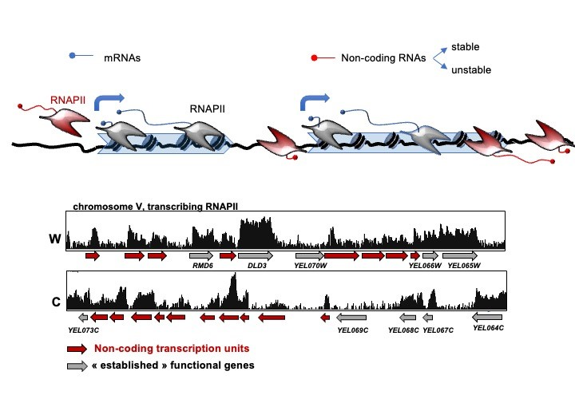
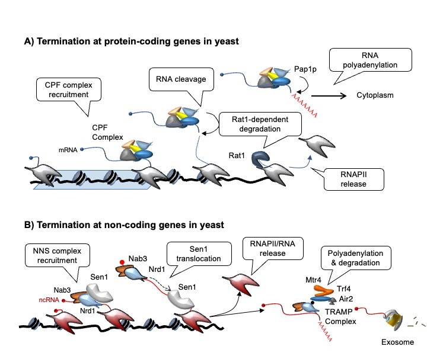
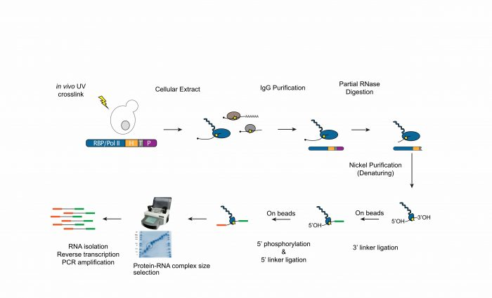
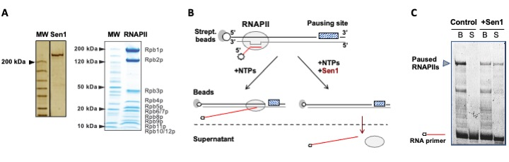
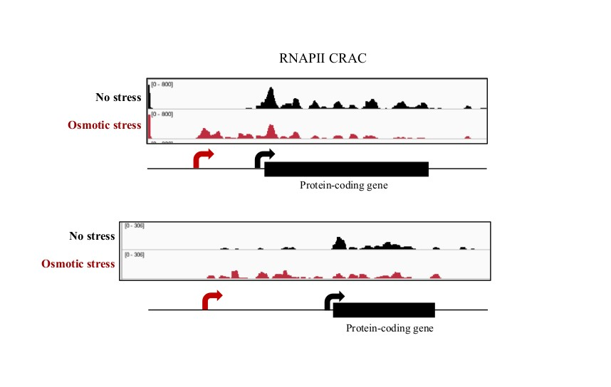
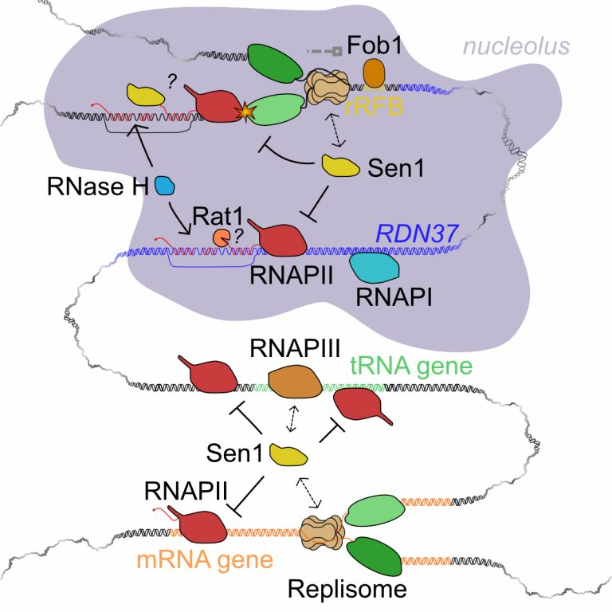
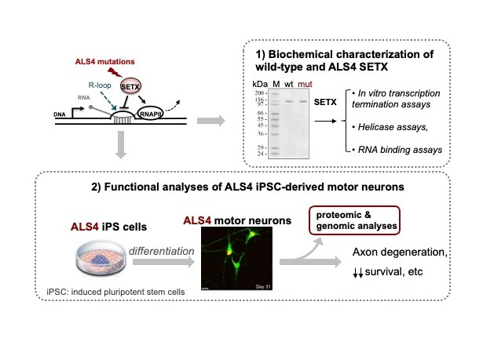
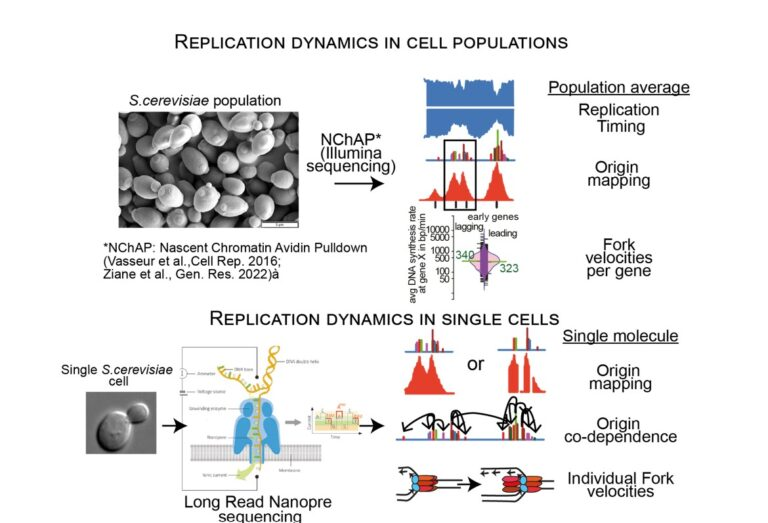

Research
All living cells rely on the establishment of particular gene expression programs to sustain basic cellular functions, acquire specific identities and respond to a variety of extracellular and intracellular stimuli. The first and likely most regulated step in gene expression is the transcription of genomic DNA by RNA polymerases, which generate distinct repertoires of RNA transcripts (transcriptomes) depending on the cell type and environmental conditions. However, while transcription is absolutely essential, it is also a source of potential conflicts with other processes co-occurring in the genome, such as DNA replication and the repair of DNA damage. If unresolved, these conflicts can compromise genome integrity.
We seek to elucidate the pathways that shape transcriptomes and the mechanisms that regulate the conflicts caused by transcription machineries. We also aim at understanding how perturbations in these processes are involved in human diseases. We employ a variety of approaches ranging from high-resolution genomics, molecular genetics, and biochemistry and we use different eukaryotic model systems such as budding yeast and various types of human cells, including motor neurons.
Our research is structured into 4 different axes :
AXIS 1:
Study of the mechanism of transcription termination for non-coding and protein-coding genes
(PIs: D. Libri & O. Porrua)
Transcription is not limited to regions annotated for producing known functional RNAs, but occurs virtually everywhere in the genome, a phenomenon conserved from bacteria to humans that is named pervasive or hidden transcription (see our reviews Villa & Porrua, 2022; and Jensen et al, 2013).

Figure 1 : Top : scheme of pervasive transcription events in red as opposed to “canonical” transcription, grey/blue. Bottom: yeast chromosome V snapshot of RNA polymerase II (RNAPII) occupancy detected by CRAC (see below) in comparison with annotated genes (grey). New, non-coding transcription units are annotated in red.
The extended distribution of non-coding transcription events needs to be controlled to avoid potentially disruptive interference with the expression of neighboring genes and other DNA-associated processes. Transcription termination has important roles in this context (see our review: Porrua & Libri, 2015), and studying the mechanisms involved in this process is one of our main interests. Transcription termination at the 3’ end of protein-coding genes depends on a conserved multi-subunit complex called the CPF-CF complex. In budding yeast, the NNS complex, composed of the RNA-binding proteins Nrd1 and Nab3, and the helicase Sen1 terminates pervasive transcription events but also transcription of functional non-coding RNA genes such as snoRNAs. Moreover, the NNS complex promotes the degradation of non-coding RNAs by the nuclear exosome and its cofactor the TRAMP complex (figure 2).

Figure 2: Transcription termination at mRNA-coding and non-coding genes in budding yeast (adapted from Porrua & Libri, 2015). A) During termination at mRNA-coding genes, components of the cleavage and polyadenylation factor (CPF) and cleavage factor (CF) complexes recognize specific sequences in the 3ʹ untranslated region (UTR) of the transcript. Upon cleavage of the transcript at the poly(A) site, poly(A) tails are added by the CPF-associated poly(A) polymerase Pap1. The 5ʹ end of the downstream portion of the transcript is then targeted by the Rat1 5ʹ–3ʹ exonuclease, which, according to the torpedo model, degrades the nascent RNA after cleavage and induces the release of the polymerase from the DNA. B) During termination at non-coding RNA (ncRNA) genes, the Nrd1–Nab3–Sen1 (NNS) complex is recruited to the elongation complex through the recognition of specific motifs on the nascent RNA by Nrd1 and Nab3. The RNA and DNA helicase Sen1 is then loaded onto the RNA, where it uses the energy of ATP hydrolysis to ‘catch up’ with Pol II and elicit termination. In a subsequent phase, the RNA-bound Nrd1–Nab3 heterodimer interacts with the TRAMP (Trf4–Air2–Mtr4) complex, which promotes polyadenylation of the transcript and its degradation or processing by the exosome.
During the past years, we have extensively characterized the function of the NNS-complex. However, many aspects of the mechanisms of termination remain unclear, both for non-coding and mRNA coding genes. We use a technique that allows detecting in vivo the position of the RNAPII with single-nucleotide resolution (CRAC, Crosslinking Analysis of cDNAs, figure 3, Bohnsack et al., 2012; Challal et al., 2022) to generate transcription maps in mutants of the NNS and the CPF-CF pathways.

Figure 3: Overview of the CRAC procedure (adapted from Challal et al., 2022). Living cells are irradiated with UV to cross-link proteins to RNA. The protein of interest (a Pol II subunit for transcription analysis, or another RNA binding protein, RBP) is purified under native conditions. A limited RNase digestion allows reduction of the size of the cross-linked RNA fragments. A second purification step under denaturing conditions is performed and linkers are added to the cross-linked RNA while the complex is still attached to the beads. After elution, the RNA–protein complex is further subjected to a denaturing, size-selection purification. The RNA from the complex is finally isolated, reverse-transcribed, and the cDNA library prepared by PCR amplification is sequenced using Illumina technology.
This allows comparative analyses of the different termination pathways and provides some information on the mechanism (together with some unexpected findings!). We like to combine these high-resolution genome-wide analyses with in vitro biochemical (figure 4) and structural approaches to investigate the mechanisms of transcription termination and the interplay between the different termination pathways (as a typical example see our recent publication: Xie et al, 2022).

Figure 4: Example of in vitro assay to assess the mechanisms of transcription termination by Sen1. A) Gel proteins showing purified Sen1 and RNAPII used in these assays. B) Scheme of the transcription termination assay using transcription elongation complexes immobilized on streptavidin beads via a biotin on the template DNA. In the presence of nucleotides (NTPs) RNAPII transcribes until it encounters a pausing site. Transcription termination by Sen1 leads the release of paused RNAPIIs and nascent RNAs in the supernatant fraction, while paused elongation complexes remain associated to the beads. C) Representative denaturing gel to monitor the release of RNAs from the beads (B) to the supernatant (S) as a readout of the efficiency of transcription termination.
AXIS 2:
Analysis of the impact of non-coding transcription in gene expression in different physiological conditions
(PI : D. Libri & O. Porrua)
Non-coding transcription events can regulate gene expression by affecting the function of promoters of neighboring genes in the sense or antisense orientation. The regulatory potential of non-coding transcription has been generally neglected, mostly because many previous analyses relied on detection of the RNA as proxy for transcription and ncRNAs produced by potentially regulatory transcription events are often unstable and not easily detected in wild type cells. High resolution and directional mapping the transcribing RNAPII allows circumventing this problem.
We are interested in further exploring pathways of regulation by non-coding transcription in different physiological and stress conditions. We detected many novel ncRNA transcription events in these conditions, some of which derive from activated bidirectional promoters, some from “solo” non-coding transcription units and some from decreased transcription termination efficiency (see our recent publication Haidara et al, 2022; and figure 5). We are pursuing the study of the impact of non-coding transcription in gene expression using a variety of approaches and bioinformatic tools.

Figure 5: Two examples of novel non-coding transcription units (in red) specifically expressed during osmotic stress that could regulate the expression of adjacent protein coding genes (black). Tracks indicate an RNAPII CRAC signal. Note that transcription of the upstream non-coding genes correlates with a decrease in the transcription signal of the indicated protein coding genes, suggesting repression of the downstream genes by transcriptional interference.
AXIS 3 :
Characterization of the mechanisms responsible for the resolution of transcription-replication conflicts
(PI : D. Libri)
The existence of transcription events that transcend the limits of annotated canonical genes is a major challenge for the cohabitation of transcription and other DNA-associated events such as replication. We have been interested in the recent past the impact that pervasive transcription has on the function of yeast replication origins (see Candelli et al, 2018). We are now directing our interests to the conflicts that are generated by RNAPII transcription. In a series of recent studies (Aiello et al., 2022; Appanah et al., 2020) we have analyzed the relationships of RNAPII transcription with replication and transcription events mediated by other polymerases. We have demonstrated, in collaboration with the de Piccoli, Pasero and Palancade labs, that Sen1, besides and independently of its role in terminating non-coding transcription, has a capital role in controlling transcription-replication and transcription-transcription conflicts. We have shown that Sen1 removes RNAPIIs that collide with the replisome or with transcription of other polymerases, thus qualifying as a master regulator of genomic crowding (Figure 6).
When conflicts occur, the nascent RNA might hybridize to the template DNA strand, forming structures called R-loops. These structures can generate DNA damage and be genotoxic, and are generally removed by RNases H that degrade the RNA portion of the hybrid. Sen1 is also believed to play a role in limiting the formation of R-loops or resolving them once they form. We studied the role of R-loops and RNases H in regions of conflicts, and described a novel method for high resolution R-loop detection. We will pursue the studies of the mechanism of conflict resolution, the roles of RNases H and R-loops in these processes and the impact in genome stability.

Figure 6: The role of Sen1 in limiting pervasive transcription is not restricted to the termination of non-coding transcription units within the NNS complex. We show that Sen1 interacts with the replisome and RNAPIII to solve conflicts with replication forks and RNAP I in the rDNA and (top two schemes) around tRNA genes (center) and in the 5’-end of genes (bottom).
AXIS 4 :
Study of the molecular function of human senataxin and its involvement in neurodegeneration
(PI : O.Porrua)
The human homologue of Sen1, senataxin (SETX), has attracted much attention because of its connection with two neurodegenerative diseases. Recessive loss-of-function SETX mutations have been associated with Ataxia with Oculomotor Apraxia type 2 (AOA2), whereas dominant gain-of-function mutations in SETX are linked to a juvenile form of Amyotrophic Lateral Sclerosis (ALS) dubbed ALS4. As Sen1, SETX has been assigned a role in transcription termination as well as in R-loop resolution, however the precise role of SETX in these processes has remained poorly understood because of the absence of biochemical data on the properties and activities of SETX. In addition, a systematic identification of the protein interactors and the targets of SETX is missing. To fill these gaps, we have benefitted from our expertise and the tools we have developed for the functional characterization of the yeast homologue of SETX to elucidate the molecular function of SETX. In collaboration with M. Sebesta and R. Stefl we have recently purified the catalytic domain of SETX and, using a variety of in vitro biochemical assays we have shown for the first time that SETX is a bona fide R-loop resolving helicase and transcription termination factors (see our recent preprint Hasanova et al, 2022, https://www.biorxiv.org/content/10.1101/2022.08.25.505353v1).
In addition, we are currently addressing the molecular basis of SETX-associated ALS in collaboration with S. Nedelec (IFM, Paris). To this end, we have generated human motor neurons from induced pluripotent stem cells harbouring ALS4 mutations and we are employing a variety of approaches to investigate the impact of these mutations on motor neuron physiology. Next, we will combine biochemical, proteomic and genomic approaches to unveil the deregulations responsible for motor neuron impairment in ALS4 (figure 7).

Figure 7. Strategies employed in our group to address the molecular basis of senataxin-associated ALS. On one side we purify and characterize biochemically both the wild-type (wt) and mutant versions of SETX (mut) harboring ALS4-associated mutations to understand how the mutations affect the capacity of SETX to resolve R-loops and/or induce transcription termination. In parallel we characterize phenotypically motor neurons harboring ALS4 mutations with a variety of cell biology, genomic and proteomic approaches.
AXIS 5 :
Single-molecule DNA Replication Dynamics
(PI : M. Radman-Livaja)
Marta Radman-Livaja has developed NChAP: (Nascent Chromatin Avidin Pulldown), a method for strand-specific genome-wide mapping of DNA replication dynamics based on Illumina NG Sequencing (Vasseur et al.,Cell. Rep., 2016; Ziane et al., Gen. Res. 2022). NChAP produces high-resolution genome-wide maps of yeast replication timing, yeast replication origins and DNA synthesis/replication fork rates. These maps revealed a trove of new information such as locus- specific differences in replication timing between the lagging and the leading strands that range from 0.5 to 6min or the presence of densely packed multi-origin clusters in place of previously identified single origins.
While these maps shed unprecedented new light on the mechanisms governing genome replication they only represent cell population averages. In order to address questions like: 1) How many origins are activated in an individual cell?; 2) Does the activation of an origin depend on the activation of other origins on the same chromosome?; or 3) What are the velocities of individual forks?, we need to use single-molecule approached. To this end, we are currently developing methods based on Nanopore long-read sequencing technology to investigate single-molecule dynamics of replication origin activation and fork progression (including monitoring of replication/transcription conflicts) on nuclear and mitochondrial genomes of budding yeast.

Figure 8: Comparison of replication dynamics parameters that can be measured by bulk NGS based techniques like NChAP (top panel) versus single molecule techniques like Long Read Nanopore Sequencing (bottom panel).
Highlighted
All
2026
2025
2023
2022
2020

2019
2018